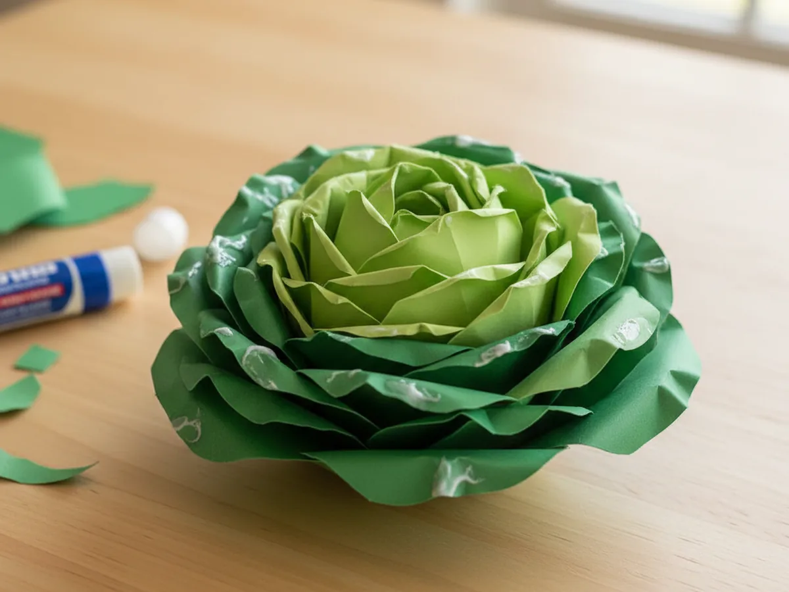
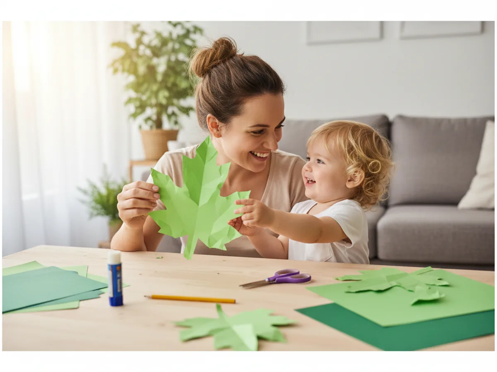
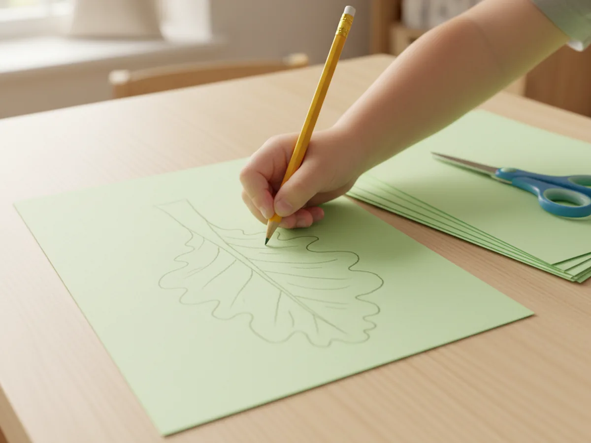
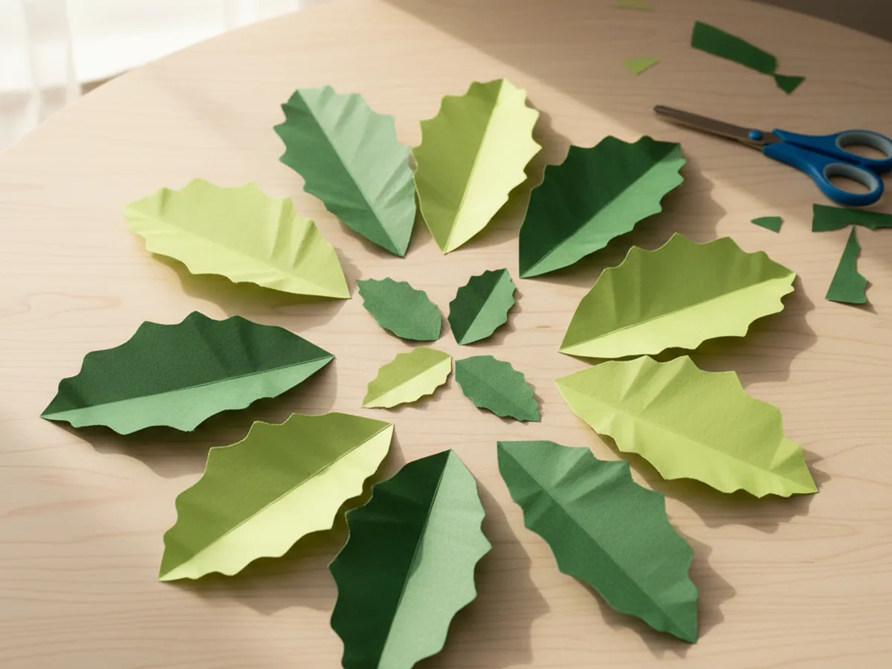
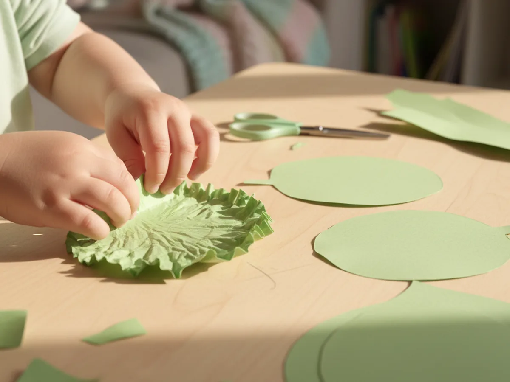
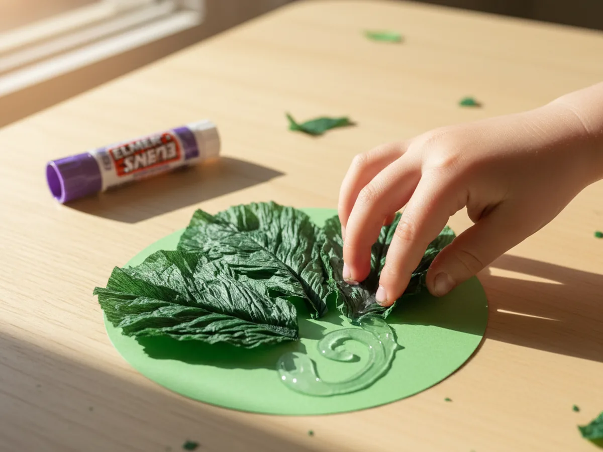
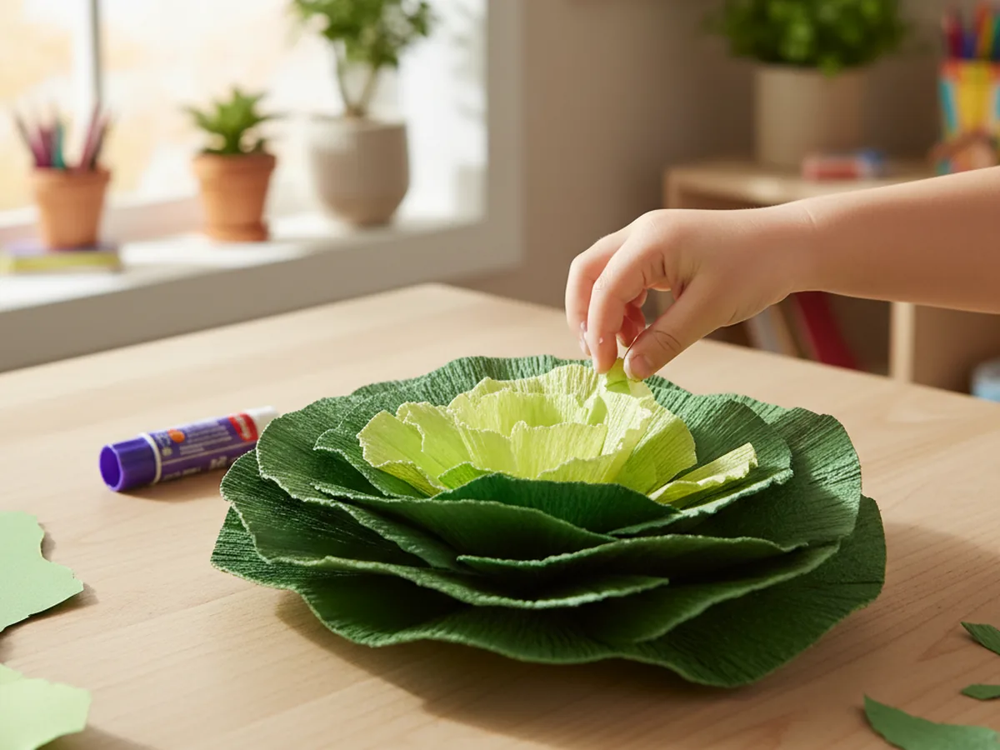
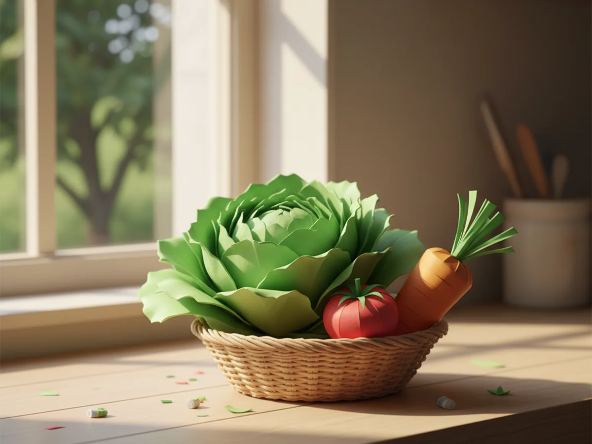

If your little one loves the pretend kitchen and asks for help building their tiny grocery store every other day, this lettuce paper craft is going to feel like magic. With a few sheets of green construction paper, a pair of safety scissors, and a glue stick, you can sit down together and watch a real-looking little head of lettuce grow leaf by leaf right on the kitchen table. 🥬
The best part is that this paper lettuce craft is wonderfully forgiving. The leaves are meant to be wavy, the layers are meant to be a little uneven, and the more imperfect the edges look, the more it ends up looking like a real ruffled lettuce. It is the kind of low-stress, low-mess project that works for a calm rainy afternoon, a quiet snack-time activity, or a sweet little surprise to add to a pretend play kitchen basket.
Why Kids Love This Craft
Kids love this lettuce paper craft because they get to make something they recognize from their own dinner plate. Toddlers and preschoolers love anything that mimics real grown-up things, and watching a flat sheet of green paper turn into something that genuinely looks like a head of lettuce is exciting in a way that simple projects often are not. A finished paper lettuce ends up in their play kitchen, their pretend salad bowl, or their fridge picnic, and that gives the craft a real life of its own after the gluing is done.
There is also a quiet developmental side to this paper lettuce project that makes it a good pick for young children. Cutting wavy free-form leaf shapes builds scissor confidence without the stress of staying on a straight line. Crinkling the edges between little fingers is a satisfying sensory step that practices fine motor control. Layering leaves from the outside in introduces the idea of sequencing and depth in a hands-on way. The whole craft is full of small wins.
And then there is the moment when your child holds up the finished lettuce and says they made it. That small flash of pride is exactly the kind of moment that makes a regular afternoon feel like a memory worth keeping. 💚

What You'll Need
Here is everything you need to make this lettuce paper craft together at home. Lay the supplies out on a clean table before your child sits down so the whole project flows without anyone hunting for the glue stick mid step.
- Crayola Construction Paper (240 Sheets, 12 Colors), includes both the lighter green and darker green sheets you need for layered lettuce leaves.
- Astrobrights Colored Cardstock Primary 5-Color Assortment, sturdy 65 lb cardstock for the small green base circle that holds the leaves together.
- Fiskars 5 Inch Pointed-Tip Kids Scissors, safe blades that cut soft wavy leaf shapes without frustrating little hands.
- Elmer's Disappearing Purple Washable Glue Sticks (18 Pack), dries clear so the layered leaves stay clean looking, washes off little fingers easily.
- Crayola Broad Line Markers (10 Classic Colors), for adding leaf veins, gentle shading, or a tiny smile if you want to turn the lettuce into a character.
- A pencil, for sketching the wavy leaf outlines before cutting.
Step-by-Step Instructions
This lettuce paper craft comes together in six gentle steps that even a 3 year old can follow with a little help. Take it slowly, hand over the easy parts, and enjoy the build. ✨
Step 1: Sketch the Wavy Lettuce Leaf Shape
Start by laying a sheet of light green construction paper flat on the table. With a pencil, draw a soft cloud-like wavy outline about the size of your palm. There is no perfect lettuce leaf shape, so let the line wiggle and curve. Aim for ruffled cloud edges rather than sharp points, and round the bottom so it can sit against a base later. This first outline becomes the visual cue for all the other leaves in the paper lettuce craft.

Step 2: Cut Out Eight to Ten Leaves in Two Shades of Green
Now bring out the safety scissors. Cut the first leaf out along the pencil line, then use it as a loose guide to cut more leaves at varying sizes. You want roughly four large darker green leaves for the outside of the lettuce, three medium leaves in a slightly lighter green for the middle layer, and two or three small pale green leaves for the very center. Stack them as you go so you can see the size differences at a glance. Wavy edges are encouraged.

Step 3: Crinkle the Edges for a Soft Ruffled Look
This is the small magic step that turns flat paper into something that looks like real lettuce. Gently pinch and crinkle the wavy edges of each leaf between your fingers. Move along the entire outer edge, giving the paper soft little crumples and curves. Do not crinkle the centers because you want the middle of each leaf to stay smooth so it glues flat to the next layer. Your child will love this step because it feels a little bit like playing with paper instead of crafting.

Step 4: Glue the Outer Dark Green Leaves to a Round Base
Cut a small circle from a piece of green cardstock, about three inches across. This circle will hold the whole lettuce paper craft together and give it stability. Use the glue stick to spread glue across the bottom half of one large dark green leaf, then press it onto the edge of the circle so the ruffled top of the leaf curls slightly outward. Repeat with three more darker green leaves, spacing them around the circle so they overlap a little and form a ring of outer leaves.

Step 5: Layer the Medium and Inner Leaves to Build the Head
Now build the head of lettuce by layering inward. Take the medium leaves and glue them on top of the outer ring, tucking each one slightly inside the previous layer so the lettuce begins to look full and rounded. Finish with the smallest palest leaves in the very center, pressed close together to mimic the tender heart of a real lettuce. As you stack, give each leaf a gentle squeeze so the crinkled edges stay puffed up. The paper lettuce craft should start looking surprisingly real.

Step 6: Display the Finished Lettuce Paper Craft
Give the glue a minute to set and then take a step back. The finished lettuce paper craft should look round, full, and ruffly, with the lighter leaves nestled in the middle and the darker ones curling out around the bottom. Slip it into a small woven basket alongside other paper vegetables for a pretend grocery basket, tuck it into a play kitchen for pretend salad making, or stick it onto the fridge with a magnet so everyone can see your child's handmade head of lettuce. 🌿

Variations to Try
Red Cabbage Version: Swap the green construction paper for shades of purple and deep red. The same layered ruffled leaf method gives you a beautiful little head of paper red cabbage. It looks gorgeous in a pretend kitchen and works as a fun way to teach kids that vegetables come in many colors.
Garden Salad Plate: Make several smaller versions and glue the loose leaves directly onto a paper plate. Add a few red paper tomato circles, orange carrot strips, and yellow corn shapes to build a full pretend salad plate. This turns the craft into a meal-themed art project perfect for talking about healthy foods together.
Lettuce Leaf Character: Skip the layered head and instead pick the biggest single leaf. Add two googly eyes near the top, draw a smiling mouth with a marker, and give your leaf a tiny name. Children love turning food into characters, and this version makes a sweet bookmark or fridge friend.
Final Thoughts
This lettuce paper craft is the kind of project that quietly turns into a favorite. It uses materials you probably already have, the steps are forgiving enough for a wiggly preschooler, and the finished little head of lettuce keeps giving back for weeks afterward in pretend kitchens, play snack baskets, and impromptu salad making. Watching your child show off something they made that looks like real food is one of those small parenting wins that sticks with you.
If your little one enjoyed this paper lettuce, save the tutorial on Pinterest so you can come back to it the next time you need a calm, sweet, low-mess afternoon together. Happy crafting, friend.
More Crafts You'll Love
If your child loved making this paper lettuce, they will love these other adorable paper food projects next: